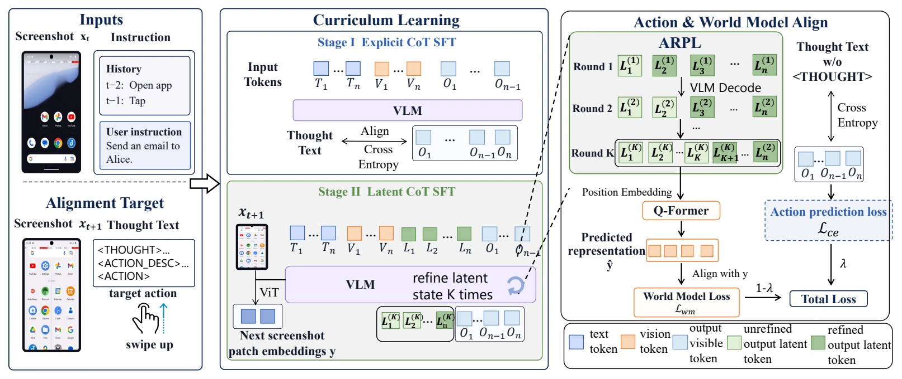
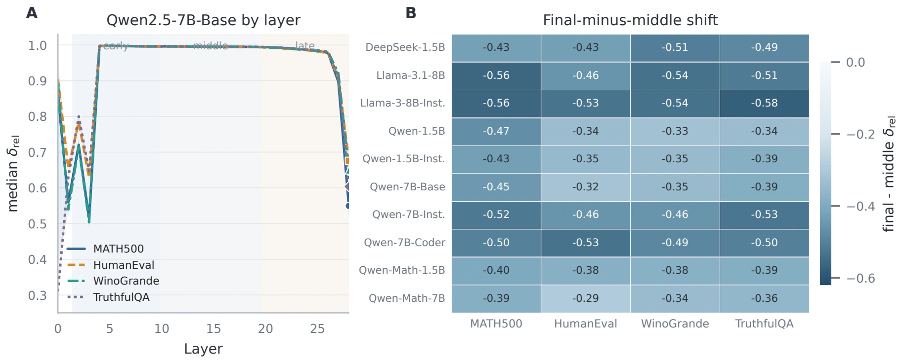
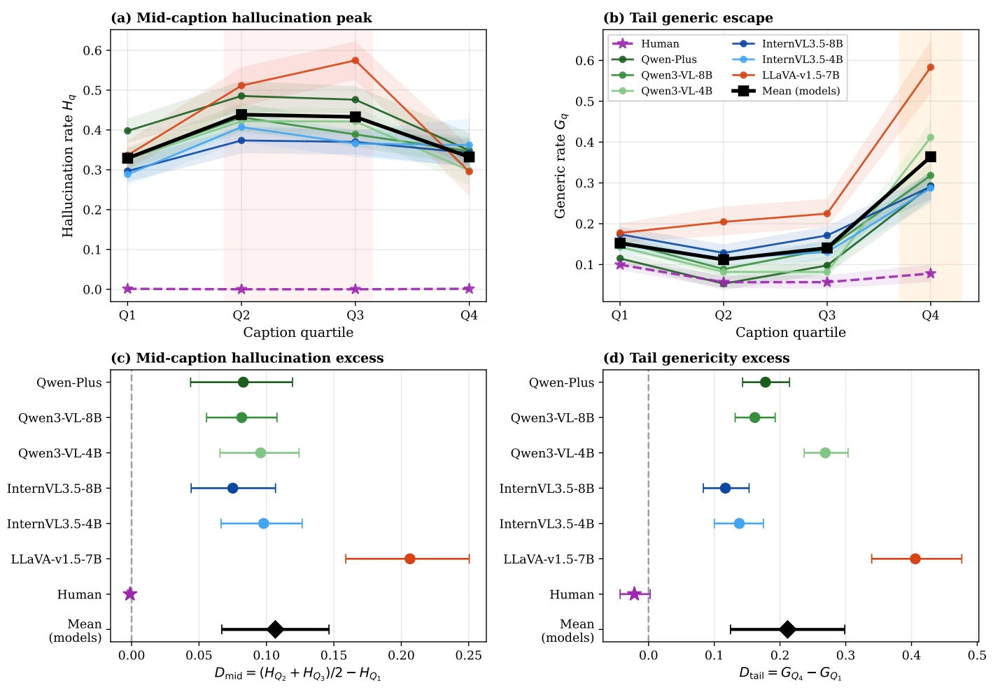
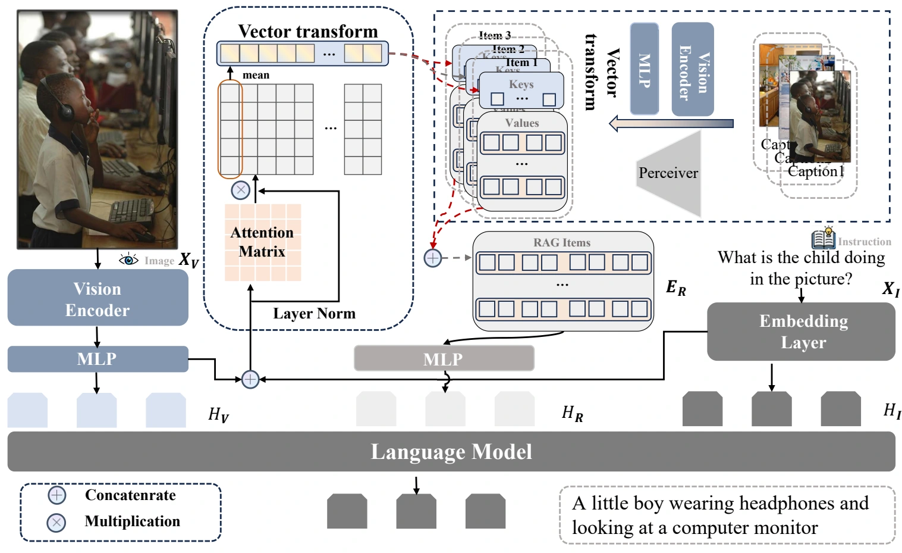

NeurIPS 2026
MIRAGE: Mobile Agents with Implicit Reasoning and Generative World Models
How can a mobile agent plan its next action without spelling out every reasoning step? MIRAGE pairs latent reasoning with a model of the next screen.
From reading a screen to choosing the next action, multimodal models depend on what their hidden states encode. My collaborators and I explore that connection through mobile agents, language model geometry, and visual grounding.

How can a mobile agent plan its next action without spelling out every reasoning step? MIRAGE pairs latent reasoning with a model of the next screen.

A layer-by-layer study of how tree-like structure changes with model depth, scale, and input domain.

Tracking where captions drift away from the image reveals different failure patterns in the middle and at the end of a description.

TinyAlign retrieves examples from a memory bank to help lightweight models connect visual and textual features.